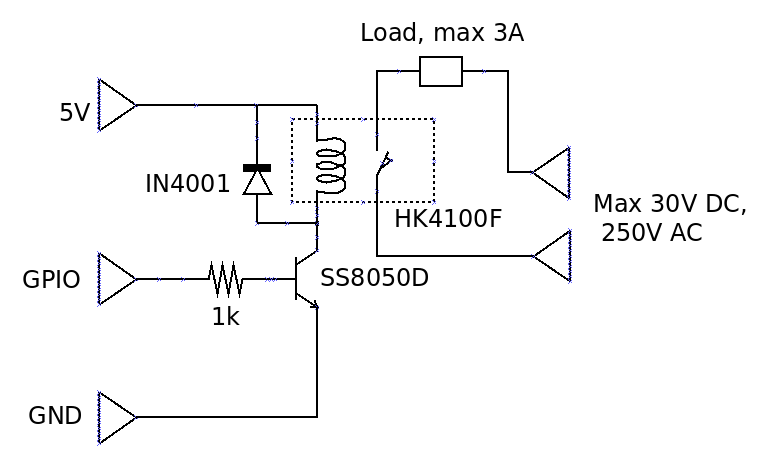

Switching a couple of amps with a Raspberry Pi and a relay
 In my article on
switching loads with a logic-level MOSFET
I explained why using a single MOSFET, even one advertised as
"logic level", to switch currents of a few amps
was more problematic than many experimenters think. The
problem, fundamentally, is that the ~3V available on the GPIO pins of
the Pi and similar devices is on the borderline of "logic level".
"Logic", in cases like this, typically means the 5V logic of traditional
TTL components. Even the best-suited MOSFETs, used alone, turned out
not to be ideal.
In my article on
switching loads with a logic-level MOSFET
I explained why using a single MOSFET, even one advertised as
"logic level", to switch currents of a few amps
was more problematic than many experimenters think. The
problem, fundamentally, is that the ~3V available on the GPIO pins of
the Pi and similar devices is on the borderline of "logic level".
"Logic", in cases like this, typically means the 5V logic of traditional
TTL components. Even the best-suited MOSFETs, used alone, turned out
not to be ideal.
Switching high-current loads is, of course, commonplace in microcontroller applications. In this article I'll go into a bit of detail about using a traditional approach -- a relay. We'll see that even the most sensitive electromechanical relay won't work unaided with the Pi's GPIO, so we'll need at least one transistor to help it out. Still, the transistor I selected only costs fourpence. I mean, literally 4p. So it's not a major cost factor.
There's nothing new in this article, pragmatically speaking. However, I will be going into slightly more technical depth than most introductions.
About relays
An electromechanical relay is one of the oldest and best-established switching technologies in the electronics industry, having been invented at about the time our ancestors came down from the trees. A direct current flowing in a coil causes two metal contacts to become magnetically attracted, closing a circuit.
What makes a relay useful is that the moving contacts can invariably carry a current many times greater than that which energises the coil. There isn't complete independence between these currents, however -- in order to carry a large current, the switching contacts have to be heavy, so they need a greater magnetic field to move them. This greater field needs a greater coil current, or a greater number of wiring turns, which in turn requires a greater coil voltage. It's possible to get relays with low coil voltages that can switch high currents, but the coil current will be proportionately higher.
Another advantage of the relay over any semiconductor switching device is the complete isolation it offers between the switching and switched circuit. This factor is often important in applications where electrical safety is a crucial factor. It's not impossible to get the same level of electrical isolation as a relay using a semiconductor design, but there will be a higher level of complexity.
The obvious disadvantages of relays are their size, weight, and noise. In some applications the relatively slow switching speed can also be a factor. A relay that can switch a few amps isn't hugely larger than a comparable MOSFET, but it is larger. Another factor that you need to bear in mind is the difference between AC and DC performance of the relay switch contacts -- but more on that later.
Choosing a relay
The application I have in mind requires switching about 2A at about 12V DC. There are many relays on the market that can do this. For embedded applications, particularly battery-powered ones, we need a relay whose coil has a low operating current at whatever voltage is available. It's not hard to get relays that will switch a few amps with an operating current of 40mA at 5V. It's even possible to get relays that will work at 3.3V, with an operating current of maybe 60mA, but these don't seem to be easily obtainable. I'm assuming in this article that we'll use a relay with a 5V coil, since the Raspberry Pi runs on 5V.
The part I'm using for this article is the HK4100F, made in China by Hue Ke. The same (or essentially the same) part is available rebranded by better-known suppliers, but the HK part can be had for as little as £1 in the UK, in small quantities, if you shop around. The wholesale price for these parts is about 20p. I've noticed that many suitable-looking relays are sold by general-purpose retailers like Amazon and eBay. These parts may be fine, but unless the vendor provides a full technical data sheet, it's hard to be sure.
The HK relay I'm using has a nominal coil resistance of 120 ohms, so that's a current of about 40 mA at 5V. Its contacts are rated for a maximum 3A at 30V DC, or 250 AC. Why the difference between AC and DC?
The reason is that the major source of relay contact destruction is arcing. When the contacts open, for a short time they will be close enough together for an arc to strike between them. The destructiveness of the arc depends on the current being carried when the contacts open. With an AC supply, the arc will not usually last longer than the time it takes for the AC current to reverse -- as the current changes direction, it momentarily falls to zero, and the arc fails. With a DC voltage, though, there's nothing to extinguish the arc except the motion of the contacts, so it will burn for longer.
Of course, the arcing I'm talking about here is a microscopic process -- it's not the same scale of arc used for welding. Still, the arcing will eventually wear away the contacts until they either become unreliable, or fuse together. So when the manufacturer gives different rating for AC and DC the difference is important..
Driving a relay with a transistor
So far as I know, there is no electromechanical relay that can be driven directly from a Pi's GPIO pins. Even a relay with a 3V coil will draw too much current. You really don't want to draw more than a few mA from each pin.
So we need a transistor to buffer the current, but it need not be anything special. A traditional bipolar transistor will be fine for this application, and cheaper than a FET. For no better reason, really, than that I had pile of them in my parts bin, I'm using the Fairchild SS5080(D) NPN transistor (datasheet here). Folks my age are probably more familiar with the old stalwart BC108, which will also work just fine. But the BC108 is a metal-cased device, and costs maybe £1 each for small quantity. The SS5080 costs only about 4p -- in fact, you probably can't buy it in quantities less than 30. In addition, the SS5080 is designed for switching, such that it has a very low collector-emitter voltage (VCE) when saturated.
Why does that matter? These cheap, plastic parts won't dissipate a lot of heat without damage. The heat dissipation at DC will be VCE x ICE, so we want the former to be as low as possible. We can't do anything about ICE in this application -- it's the relay coil current.
The circuit
Here is the simple circuit.

The diode across the relay coil is the traditional "freewheel" diode. The voltage generated across a coil by a changing current is proportional to the rate of change of current. In a switching application, the rate of change of current can be very large -- perhaps from fully on to fully off in a microsecond. Switching on the current isn't a problem, because the generated current has a path to flow in the circuit. It's switching off the current that's the problem. In principle, the voltage generated across the coil when the current switches off can be thousands of volts. In practice, parasitic capacitances and other factors prevent such a large voltage build-up, but it's still large enough to cause damage. The direction of current flow in these circumstances is in the same direction as the original DC current, so this surplus current can flow in circuit that includes the coil and the diode, and this current will quickly dissipate the stored energy. The diode doesn't need to be particularly robust for this application -- the amount of energy that has to be dissipated is actually tiny. the IN4001 is the conventional choice for most low-voltage applications.
There's really only one component choice to make in this circuit, and that's the value of the resistor between the GPIO pin and the base of the transistor. In practice, a large range of values will work fine, but we still have to work out what that range is. This requires a consideration of the properties of bipolar transistors.
In a switching circuit, we want the transistor operating in the saturation region whenever it is passing any current at all. In the linear region, the current flowing in the collector is essentially proportional to the current flowing in the base. The constant of proportionality is called the forward current gain, and denoted by the symbol HFE.
Like many bipolar transistors, the SS5080 is available is different gain classes. Class "D" has the highest gain, which the datasheet says will be in the range 160-300. That's a large range, which we will have to accommodate in the design.
The transistor is said to be saturated at the point when increasing the base current causes no further increase in the collector current. At this point, the collector-emitter voltage VCE reaches its lowest value, for that specific collector current. For high collector currents -- hundreds of mA -- this voltage could be a significant fraction of a volt. However, the collector current in our circuit won't exceed about 40mA, and we can safely assume that VCE will be zero.
If VCE is zero, then the collector current IC will just be the relay coil current, 40mA. It can't get any larger than this, because the coil resistance limits the current. If we assume the minimum value of HFE -- 160 -- then the base current that will be needed to cause saturation will be 40mA/160, or 250uA.
What value of base resistance will allow for a base current of at least 250uA? The voltage across the base resistor will be determined by GPIO voltage and the transistor's base voltage. The GPIO voltage will be about 3.2V -- near the supply voltage of the Pi's GPIO system. For the base voltage, it's conventional to take a voltage of 0.6V for all small transistors (in practice, the value I measured was about 0.8V).
So the voltage across the base resistor is 3.2 - 0.6 = 2.6V, so the base resistance is 2.6V / 250uA = 10 kilohms.
Note that this is a maximum value -- using a larger value reduces base current in such a way that the transistor will be working in the linear region. We don't want this, because the transistor will dissipate heat. But there's little harm in using a smaller resistor. Making the resistor smaller will help to cope with uncertainties in the component parameters, and ensure that the transistor remains saturated even if these parameters are unfavourable. We can't make the resistance too small, though -- we need to limit the current drawn from the Pi's GPIO. Making the value 1k means that the GPIO current will be about 3mA, which is well within the Pi's ratings. Using the highest safe base current is often a good idea in high-speed applications, because the higher current will charge the (very small) base capacitance more quickly. In this application, however, any base resistance between about 1k and 5.6k will work with no noticeable difference.
When I built and tested the circuit, I found that VCE was mere 30mV when the relay was energized, making the power dissipation in the transistor about 1 milliwatt.
Can we use a larger relay?
Suppose we wanted to switch 10A, rather than 2A. What would we have to change? Well, obviously we'd need a higher-rated relay. A 5V-coil relay that will switch 10A will typically have a coil resistance of 70-100 ohms, so we should assume a coil current of 70mA. Looking at the datasheet for the transistor, we see that this current is well within the specified range, and the minimum VCE will be about 0.2V (not zero). This doesn't change any of the design calculations, but it does mean that the power dissipation will be a little higher -- 0.2 * 0.04 = 8mW. Since the thermal resistance of the case is, again according to the datasheet, 125 Celsius per watt, the total temperature increase will be 0.008 * 125 = 1 Celsius. This will scarcely be noticeable. So we can use a largely relay in the same circuit without making any changes.
In fact, we could fit a substantially larger relay, but we'd have to be careful to check that that power dissipation won't overheat the transistor.
What kinds of load can be switched?
The simple answer is -- whatever is compatible with the ratings of the relay's switch contacts. Of course, while the relay might be rated for 3 amps, that doesn't mean that it will switch 3 amps repeatedly, forever. The relationship between lifetime and load current is called the endurance curve. For the HK4100F, the manufacturer's published endurance curve shows a lifetime of a million actuations with a load current of 1A, but "only" 100,000 with 2A. No figures are presented for 3A so, although the published rated current is 3A, the lifetime is completely unknown at that current. Even at 2.5A, the lifetime is likely to be less than 1,000 operations.
In short, you need to be very careful about relying on a manufacturer's headline figures, and inspect the full data quite carefully.
One final pragmatic point: the HK4100F has a contact voltage rating of 250V AC and, in principle, is suitable for switching AC mains loads. Is that good idea?
The problem lies in the layout of the contacts. The coil contacts are only 2.5mm from the switch contacts. When soldered on a PCB, the clearance between mains conductors and low-voltage conductors could be less than 1mm. That isn't close enough to cause electrical breakdown of the insulating material or the air -- at least when it's dry. Still -- I'd want to think very hard about whether such a layout could provide adequate electrical safety. Relays are available with much greater separation between the coil and switch contacts, and these might be safer.
Closing remarks
Switching currents of a couple of amps using a microcontroller or computer requires only simple and inexpensive components. However, there are some subtleties in the design of such circuits that are often overlooked.